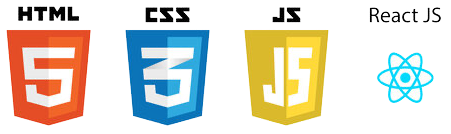
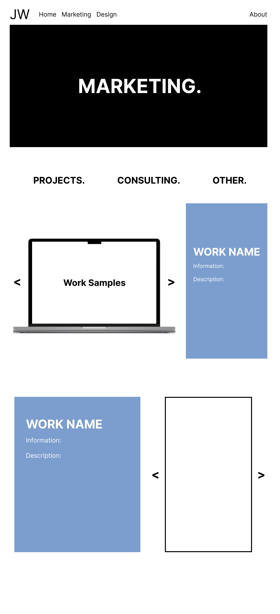
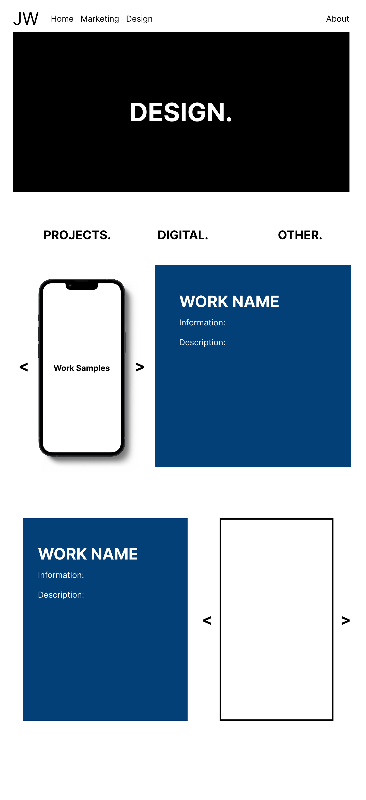
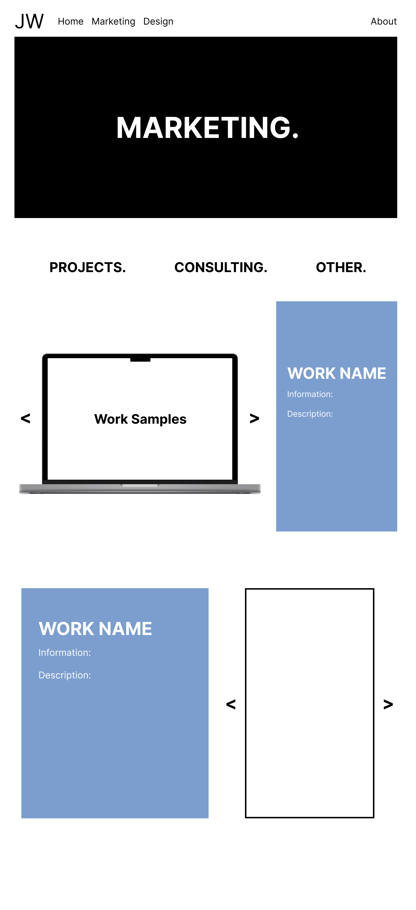
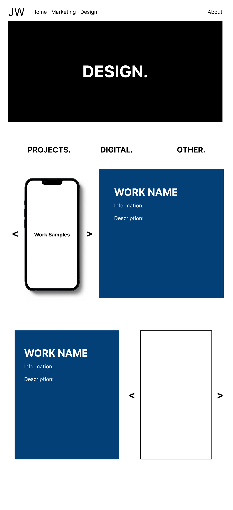

WEB DEV.
I coded this website from scratch.
In addition to marketing and design, I have technical coding experience which can be seen in this portfolio website. Below I have highighted my process I took to complete my portfolio.
 



Developing this website.
I broke down my development into three parts: research, design, and coding. I first started by researching portfolios as inspiration for my own site. I also listed out items I wanted to include on my portfolio. I then developed a color pallete for the site and created a wire frame layout for my site, which can be seen on the left. Finally, I began to code prototypes for my site, using different softwares until I finally found one that worked best for my portfolio.